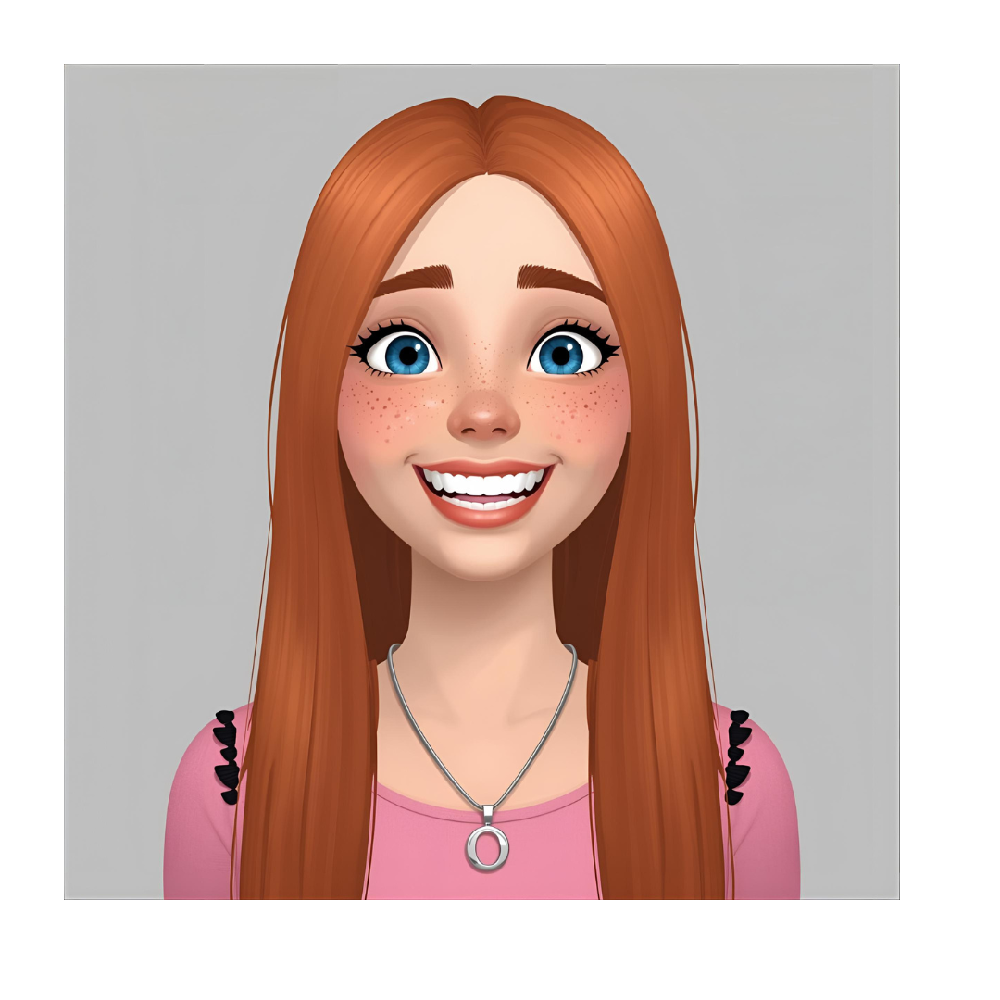
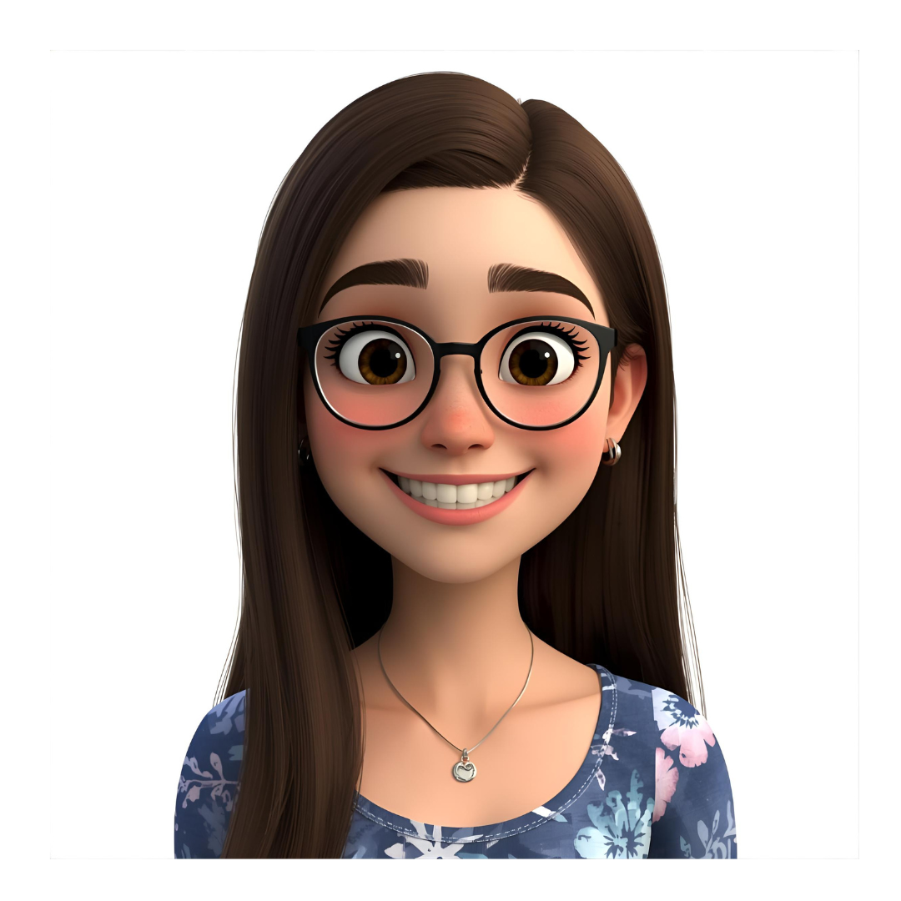
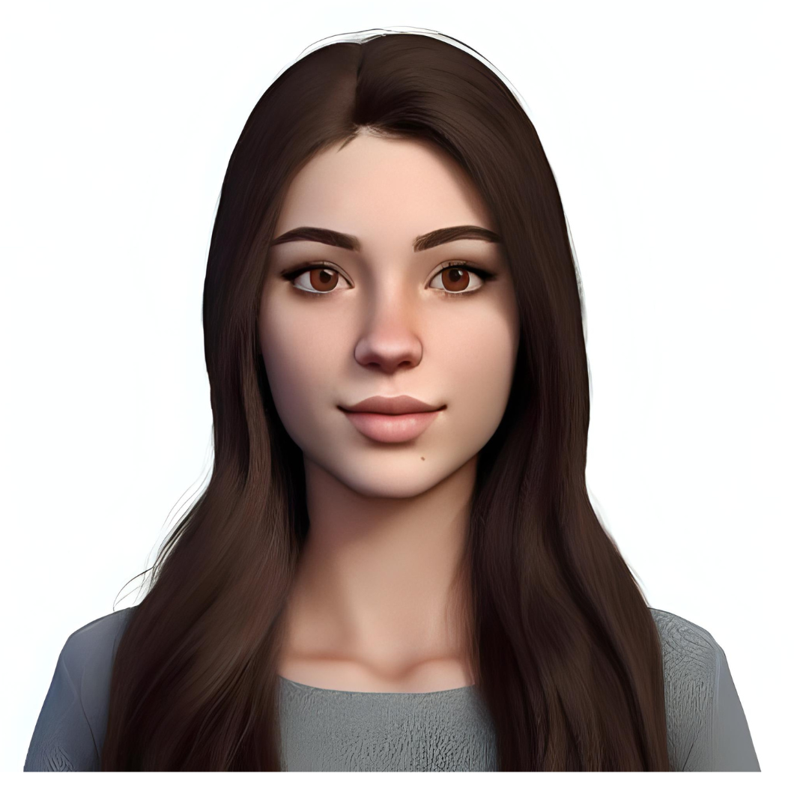

Daniela Valero
Tutora del aula de 3 años en el C.E.I.P ARCOIRÍS🌈.
Pedagoga musical y parte del equipo del proyecto “Reggio Emilia por la TIC”
Go somewhere

Paula Fernández
Tutora del aula de 4 años en el C.E.I.P ARCOIRÍS🌈
Orientadora y parte del equipo del proyecto “Reggio Emilia por la TIC”
Go somewhere
Lidia Antolín
Tutora del aula de 5 años en el C.E.I.P ARCOÍRIS🌈
Experta en TIC en el ámbito educativo y parte del equipo del proyecto “Reggio Emilia por la TIC
Go somewhere

Lucia Garcia
Tutora del aula de 4 años en el C.E.I.P ARCOÍRIS🌈.
Pedagoga Terapéutica, experta en la metodología Reggio Emilia tras varios años de experiencia.
Go somewhere